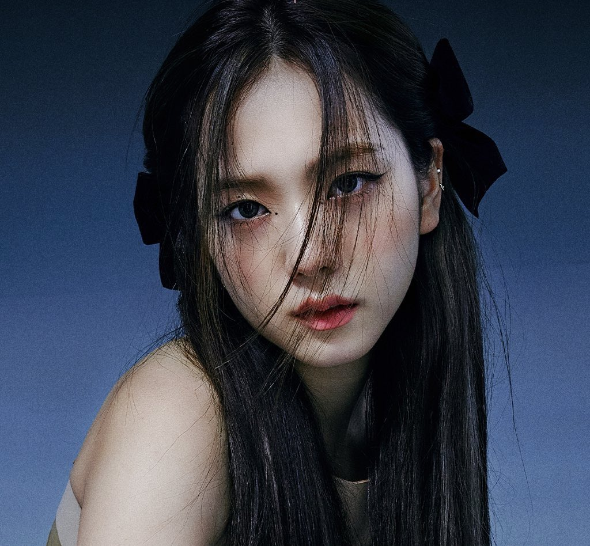
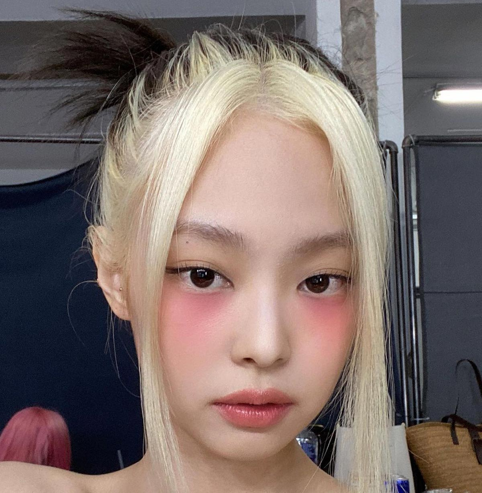
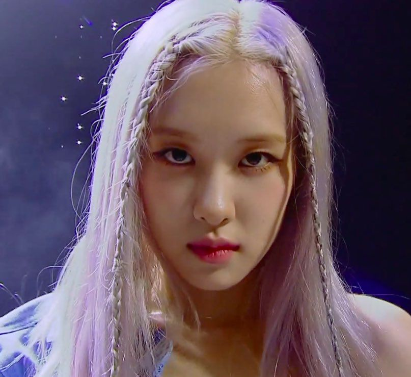
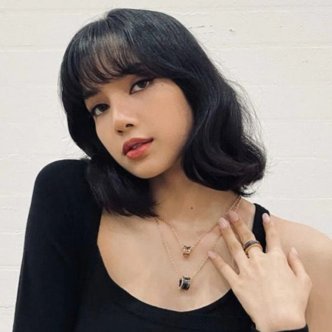

Jisoo
Jisoo, whose full name is Kim Ji-soo, is a member of the South Korean girl group Blackpink. She is known for her role as a vocalist and visual in the group. Jisoo was born on January 3, 1995, in Gunpo, Gyeonggi Province, South Korea. Before debuting with Blackpink, she trained under YG Entertainment for several years. Jisoo has gained popularity for her powerful vocals, charming personality, and striking visual appearance. She has also appeared in various television shows and endorsements, further contributing to Blackpink's success as one of the leading K-pop groups globally.
Jennie
Jennie Kim, better known simply as Jennie, is a South Korean singer and rapper who is a member of the K-pop girl group Blackpink. Born on January 16, 1996, Jennie rose to fame as a member of Blackpink, which debuted under YG Entertainment in 2016.
She is known for her versatile talents, including her skills in singing, rapping, and dancing.Jennie gained attention even before Blackpink's debut through her appearances in various music videos and commercials. As part of Blackpink, she has contributed to the group's success with hit songs such as "Boombayah," "Whistle," "Ddu-Du Ddu-Du," and "Kill This Love."
Rosé
Rosé, also known as Park Chae-young, is a member of the South Korean girl group Blackpink. She is the main vocalist and lead dancer of the group. Born on February 11, 1997, in Auckland, New Zealand, Rosé moved to Australia at a young age. She auditioned for YG Entertainment in Australia and became a trainee under the company before debuting as a member of Blackpink.
Rosé is known for her soulful voice, unique vocal tone, and captivating stage presence. She has garnered attention for her powerful performances and has become a prominent figure in the K-pop industry. Rosé has also gained recognition for her fashion sense and has been praised for her stylish looks both on and off stage.
Lisa
Lisa, whose full name is Lalisa Manoban, is a member of the South Korean girl group Blackpink. She is the main dancer and rapper of the group. Lisa was born on March 27, 1997, in Bangkok, Thailand. She joined YG Entertainment through their auditions in Thailand in 2010 and became a trainee under the company for several years before debuting as a member of Blackpink in 2016.
Lisa is known for her exceptional dance skills, charismatic stage presence, and unique rap style. She has gained widespread recognition for her talent and has become a prominent figure in the K-pop industry. Lisa has also been involved in various solo projects and endorsements outside of Blackpink's activities.